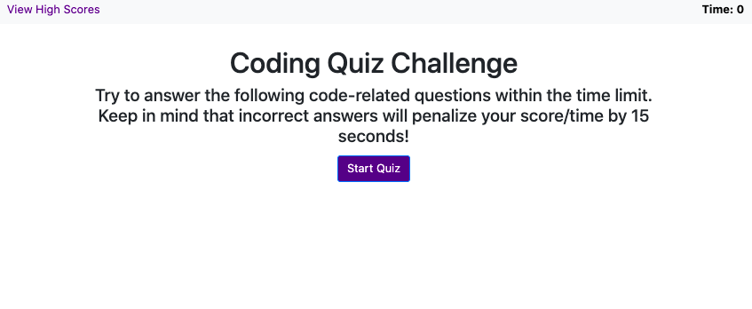
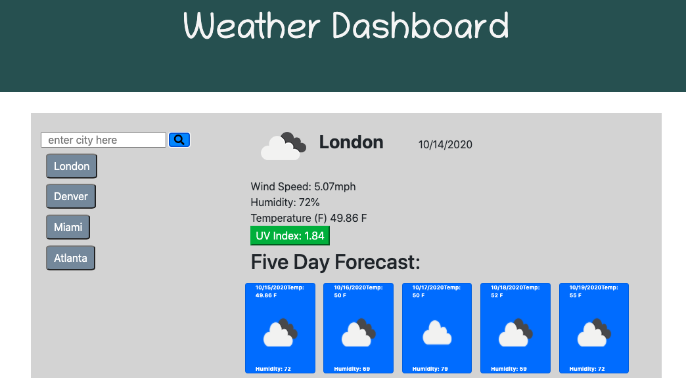

Portfolio

Find a Track!
Have you ever been so frustrated to arrive at a running track only to find it closed? Application utilizing npm packages, express-handlebars, sequelize, MySQL. User input allows functionality to add a track, edit a track, or delete a track.

Senior Travel Covid Care
Application that utilizes a medicare and physician registry API. Target audience is senior citizens. Two APIs were used in the creation as well as a link to Google maps upon selection of a physican.

Eat Da Burger
JavaScript + JQuery application that utilizes the open weather API. Application stores user info upon button click to deliver the current and 5-day forecast for the inputted city. Previous searched city is saved as a button so the user can search the same city with ease.

Coding Quiz
JavaScript created application that utilizes local storage and timer functionalities. User is scored based on time elapsed and correct versus incorrect questions. Scores are saved and generated on a high scores html.

Random Password Generator
JavaScript generated application that utilizes user input to deliver a random password.
